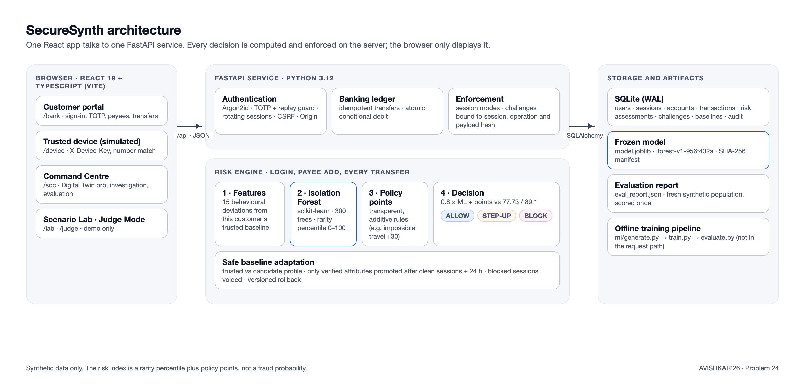
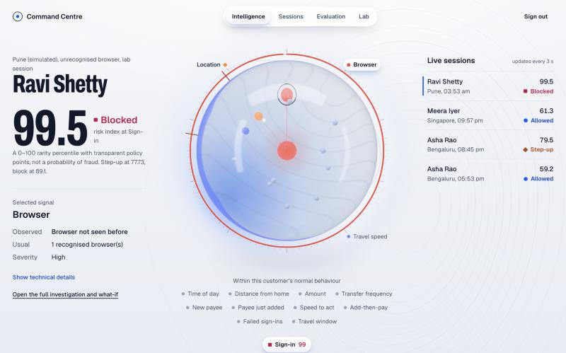
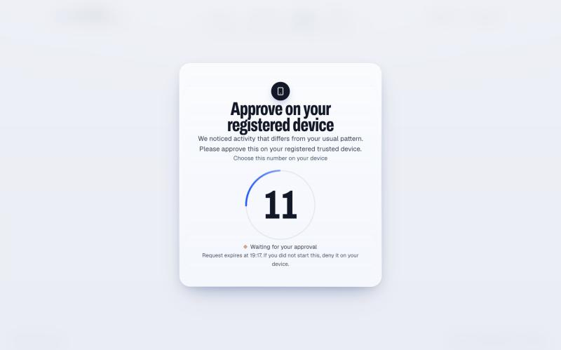
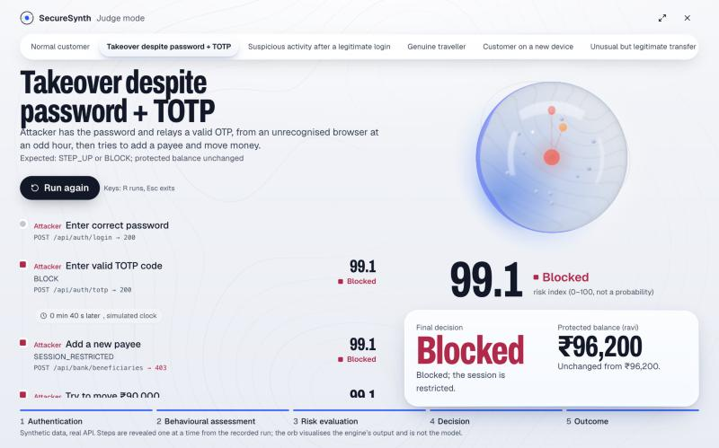
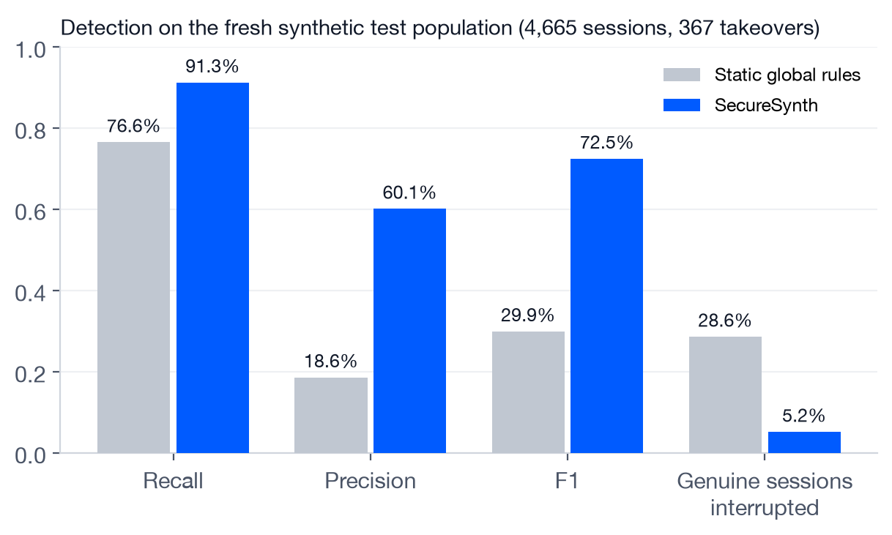
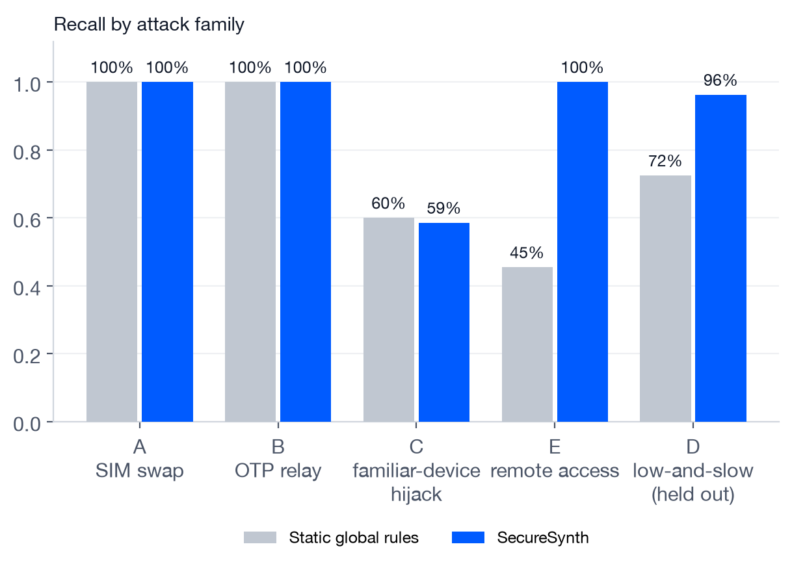

SecureSynth · Technical report · AVISHKAR'26 · Problem 24SecureSynth · Technical report · AVISHKAR'26 · Problem 24
SecureSynth · Technical report · AVISHKAR'26 · Problem 24SecureSynth · Technical report · AVISHKAR'26 · Problem 24Technical report · AVISHKAR'26 · Problem Statement 24 · Domain: AI in Cyber Security and FinTech
| Team | The_Terminators · Team ID AV26-50F33FD4DE |
| Members | Mohammed Hussain; members 2–4 TBD (to be completed by the team, see docs/TEAM.md) |
| Mentor / institution | TBD |
| Repository | https://github.com/mdhussain398/SecureSynth (branch feat/frontend-renaissance) |
| Model | Isolation Forest iforest-v1-956f432a, frozen; evaluation protocol v2 |
| Date | 25 November 2026 |
Scope and honesty statement. SecureSynth is a working prototype on synthetic data only. Every customer, account, device, location and attack is fictional and authored by the team. The results below demonstrate the method on that data; they are not real-world validation. The risk index is a rarity percentile plus transparent policy points. It is not a fraud probability.
Attackers now routinely get past passwords and one-time codes through phishing, real-time OTP relay and SIM swaps. To the bank, a session opened that way looks authenticated. Static rules such as "new device → challenge" catch some of these attacks, but they punish genuine customers who travel or change phones.
SecureSynth treats authentication as a continuous decision.
On a fresh synthetic test population scored once with a frozen model (4,665 sessions, 367 takeovers), SecureSynth compares with static global rules as follows:
| Static rules | SecureSynth | |
|---|---|---|
| Takeovers intervened (recall) | 76.6% | 91.3% |
| Genuine sessions interrupted | 28.6% | 5.2% |
| Precision | 18.6% | 60.1% |
| F1 | 29.9% | 72.5% |
Two results cut the other way:
In each case the bank sees correct credentials. In our evaluation, password + TOTP alone intervened in 0 of 367 takeovers and let the full ₹3.10 cr of attempted attack transfers complete.
Global rules judge every customer by the same yardstick. On the same population they intervened in 76.6% of takeovers, but they also interrupted:
Their precision was 18.6%: about four of every five interventions hit a genuine customer.
| Stakeholder | Need |
|---|---|
| Customers | Not to lose money to a takeover; not to be blocked when they travel or change phone |
| Fraud and security analysts | Decisions they can explain, investigate and override |
| The bank | Lower fraud loss and lower friction, with an audit trail |
EVALUATION_PROTOCOL.md)score = clip(0.8 × ML index + Σ policy points, 0, 100).The features are deviations from this customer, not absolute values. A 02:00 sign-in is normal for a night-shift worker and rare for a 9-to-5 customer. Because the deviations are personal, one shared model serves every customer.
The 15 features (backend/app/risk/features.py):
Labelled takeovers are rare, change constantly and are unavailable at the start. An unsupervised rarity model learns what legitimate deviation looks like and flags the unusual.
| Rule | Points |
|---|---|
| Unrecognised browser | +12 |
| Unfamiliar location | +8 |
| Impossible travel | +30 |
| Payee added < 10 min before transfer | +20 |
| Amount far above usual | +15 |
| ≥ 2 failed sign-ins | +8 |
| Verified travel window | −15 |
The baseline is a security control, so poisoning it would make an attacker "normal". SecureSynth keeps two profiles:
Promotion rules:
Analysts see four separate panels:
They also get a counterfactual ("what if this one feature were normal?") that re-runs the real scoring path. It is labelled hypothetical and never stored. Customers see only calm, category-level messages; scores are never sent to them (test-enforced).

| Technology | Why it was chosen |
|---|---|
| React 19 + TypeScript (Vite) | Shared typed API contract (types.ts, v1.2.0) between frontend and backend; fast offline builds |
| Tailwind CSS v4, Motion, three.js + React Three Fiber | One design system across every screen; reduced-motion-aware motion; a lazy-loaded WebGL Digital Twin orb with a CSS fallback |
| FastAPI (Python 3.12) + Pydantic 2 | Validation and dependency-based authorisation on every route; OpenAPI generated from the code |
| SQLAlchemy 2 + SQLite (WAL) | Zero-setup, offline, transactional. A transfer is one atomic conditional debit with an idempotency key. |
| argon2-cffi, PyOTP, cryptography (Fernet) | Argon2id passwords; RFC 6238 TOTP with replay protection; encrypted TOTP seeds |
| scikit-learn Isolation Forest | Unsupervised: needs no takeover labels, trains in seconds, scores in milliseconds |
| pytest | 89 backend tests covering security, ledger, challenges, baseline, engine, Lab and ML hygiene |
The product runs fully offline after installation. It needs no Docker, external API or paid service, and it calls no AI service at runtime.
POST /api/bank/transfers with the session cookie, X-CSRF-Token and an idempotency key.| Control | Evidence (backend/tests) |
|---|---|
| Correct password + OTP but wrong person is still assessed | test_continuous_risk_* |
| Account data unreadable until a login step-up is approved | test_unverified_login_step_up_cannot_read_account_data |
| TOTP replay rejected | test_totp_replay_rejected |
| Another user's device cannot approve a challenge | test_other_users_device_cannot_approve |
| CSRF and foreign-origin mutations rejected | test_totp_without_csrf_header_rejected, test_foreign_origin_rejected_on_mutation |
| No scores or feature names reach customers | test_customer_message_reveals_no_scores_or_feature_names |

Command Centre on a real blocked takeover (ravi, risk index 99.5).

Customer view of a step-up. Only the number to match is shown, never a score.

Judge Mode replaying the takeover scenario live through the real Lab API. Result: blocked at 99.1, protected balance unchanged.
| # | Scenario | Expected | Verified result |
|---|---|---|---|
| 1 | Normal customer | ALLOW | Allowed; asha pays ₹2,500 |
| 2 | Takeover despite password + TOTP | STEP-UP or BLOCK; balance unchanged | Blocked; session restricted; ravi's ₹96,200 unchanged |
| 3 | Suspicious activity after a legitimate login | Login ALLOW, then intervention | Step-up and restriction; balance unchanged |
| 4 | Genuine traveller | STEP-UP, approved, completes | Approved on the trusted device; ₹2,500 completes |
| 5 | Customer on a new device | STEP-UP, approved | Approved; transfer completes |
| 6 | Unusual but legitimate transfer | Friction grows with amount | Allowed at the ₹1,50,000 default |
The protocol was pre-registered before any v2 result was seen (docs/EVALUATION_PROTOCOL.md).

| Approach | TP | FP | FN | TN | Precision | Recall | F1 | Genuine sessions interrupted |
|---|---|---|---|---|---|---|---|---|
| Password + TOTP | 0 | 0 | 367 | 4,298 | 0.0% | 0.0% | 0.0% | 0.0% |
| Static global rules | 281 | 1,230 | 86 | 3,068 | 18.6% | 76.6% | 29.9% | 28.6% |
| SecureSynth | 335 | 222 | 32 | 4,076 | 60.1% | 91.3% | 72.5% | 5.2% |
Counting blocks only:
| Approach | Precision | Recall | Block FPR |
|---|---|---|---|
| Static global rules | 98.2% | 43.3% | 0.07% |
| SecureSynth | 86.6% | 61.9% | 0.81% |

| Who was interrupted | Static rules | SecureSynth |
|---|---|---|
| Travellers | 98.6% | 16.7% |
| New-device sessions | 27.8% | 8.7% |
| Genuine sessions blocked outright | 0.07% | 0.81% |


| Approach | Attempted | Prevented | Lost | Genuine value delayed |
|---|---|---|---|---|
| Password + TOTP | ₹3.10 cr | ₹0 | ₹3.10 cr | ₹0 |
| Static global rules | ₹3.10 cr | ₹2.98 cr | ₹12.2 lakh | ₹2.89 cr |
| SecureSynth | ₹3.10 cr | ₹2.96 cr | ₹14.6 lakh | ₹57.0 lakh |
How "prevented" splits. BLOCK is permanent. Step-up prevention assumes the attacker cannot pass trusted-device verification.
| Approach | Stopped by BLOCK | Stopped by step-up |
|---|---|---|
| SecureSynth | ₹2.61 cr | ₹34.8 lakh |
| Static global rules | ₹2.38 cr | ₹59.9 lakh |
SecureSynth also blocks more genuine value outright: ₹25.0 lakh against ₹0.3 lakh.
| Check | Result |
|---|---|
| Decision latency (in-process, one laptop, excludes network and database) | p50 5.48 ms · p95 5.61 ms |
| Backend tests | make test: 89 passed |
| Frontend | tsc -b and npm run build pass |
| Frozen manifest | 6/6 SHA-256 hashes match |
| Synth Core logo (measured in Chrome on Apple M1) | 60 FPS at 1440×900@2x, 390×844@3x and 1920×1080@2x |
The full list is in docs/KNOWN_LIMITATIONS.md.
A correct password and a correct OTP prove possession of credentials, not presence of the customer. SecureSynth keeps checking after sign-in, explains every decision, and asks the real customer when it is unsure. On our synthetic evaluation, that caught more takeovers than static rules while interrupting far fewer genuine customers.
make test
cd frontend && npx tsc -b && npm run build
make eval reproduces the report, but only with unchanged frozen files.docs/report/tools/charts.py regenerates every chart in this report directly from backend/artifacts/eval_report.json.The team used Claude Code (Anthropic) to help write code, tests and documentation. This was permitted, as confirmed with the organisers. Design decisions, review and the demonstration are the team's. The product itself calls no AI service.